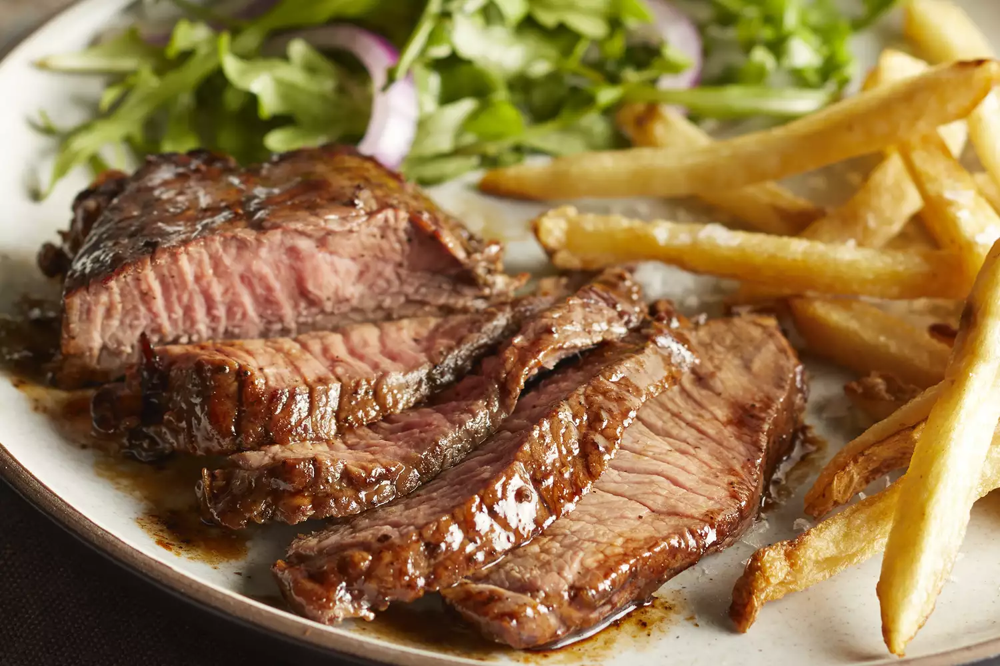

Steak

Description
Marinating a steak before cooking serves two purposes: It helps tenderize the meat and adds just the right amount of flavor. Some top-quality steaks can go without a marinade, since they're already full of meaty flavor and, with the right prep, end up juicy and tender without any help from a marinade. Budget-friendly steaks, however, benefit tremendously from marination. You'll be shocked at the difference a good marinade makes!
Ingredients
- 1/2 cup olive oil
- 1/2 cup soy sauce
- 1/3 cup lemon juice
- 1/4 cup Worcestershire sauce
- 3 tablespoons dried basil
- 1 1/2 tablespoons garlic powder
- 1 1/2 tablespoons dried parsley flakes
- 1 teaspoon ground white pepper
- 1 teaspoon dried minced garlic (optional)
- 1/4 teaspoon hot pepper sauce (optional)
Steps
- Place olive oil, soy sauce, lemon juice, Worcestershire sauce, basil, garlic powder, parsley, white pepper, minced garlic, and hot pepper sauce in a blender.
- Blend on high speed until thoroughly combined, about 30 seconds.